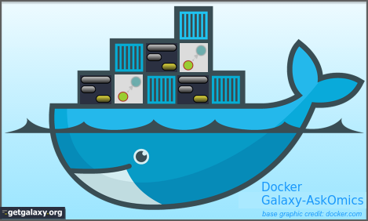

Dockerized Galaxy + AskOmics is running!AskOmics provide a visual representation of the user abstraction as a graph. By starting from a node of interest and iteratively selecting its neighbors, the user creates a path on an abstraction graph. This path can then be transformed into a SPARQL query that can be executed on the original dataset. AskOmics is a collaborative project supporting with a strong scientific partnerships with: |

|
Galaxy is an open platform for supporting data intensive research. Galaxy is developed by The Galaxy Team with the support of many contributors. The Galaxy Docker project is supported by the University of Freiburg, part of de.NBI.